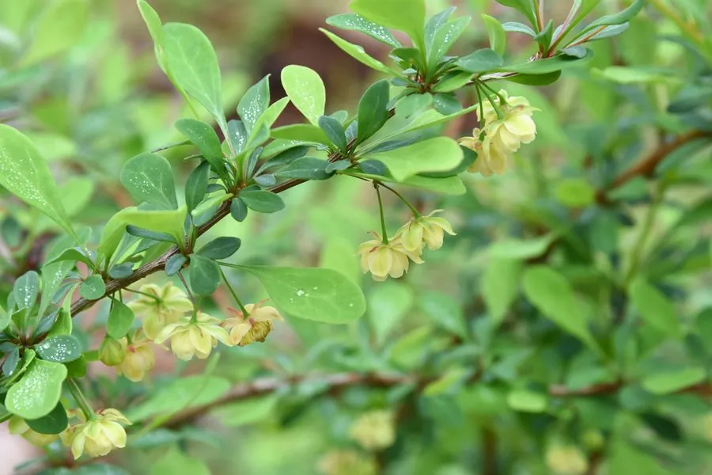

灌木与花木 · 植物界
紫叶小檗 Berberis thunbergii

小檗科落叶灌木，叶片紫红、春季开小黄花，秋季结红果，耐修剪，是北方园林色块与绿篱的常用彩叶材料。
- 分类
- 门被子植物门纲木兰纲目毛茛目科小檗科属小檗属
- 栖息环境
- 海拔 1500 米以下的向阳坡地、庭院与园林，喜光耐寒耐旱
- 地理分布
- 原产日本；中国华北、华东、西北等地广泛栽培
- 保护级别
- 暂无评估；中国未列入国家重点保护野生植物名录
物种志
紫叶小檗为小檗科小檗属落叶灌木，高 1–2 米，枝细密，具叶刺。叶片倒卵形或匙形，全缘，生长期呈紫红色至紫褐色，秋季转深红。花小，黄色，2–5 朵簇生，花期 4–5 月；浆果椭圆形，成熟时鲜红，果期 8–10 月。
紫叶小檗原产日本，中国南北各地广泛栽培，是园林中重要的彩叶灌木。它喜光、耐寒、耐旱，也耐半阴，对土壤要求不严，耐修剪，常与金叶女贞、大叶黄杨等搭配组成色块与绿篱。秋季叶色转为深红，可一直保持到落叶。根与茎含小檗碱，可提取黄连素，入药有清热燥湿之效。春季黄花与紫叶相衬，秋季红果挂枝，观赏期长；因枝上有刺，也常作边界防护植物。
形态与习性
- 株高1–2 m，枝细密、具叶刺
- 花期4–5 月，花小、黄色
- 果期8–10 月，浆果鲜红
- 光照喜光，光照足时叶色更紫艳
- 水分耐旱，忌积水
- 土壤适应性强，以疏松壤土为好
- 主要用途园林色块与绿篱，根茎提取小檗碱
趣味知识
- 紫叶小檗的叶色在春季和秋季最艳，夏季高温时略转暗。
- 它的根和茎含小檗碱，是提取黄连素的原料之一。
- 枝条上的刺由叶片变态而来，常三叉着生。
- 与原种绿叶小檗相比，紫叶品种在园林中应用更广。